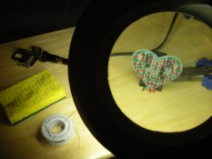
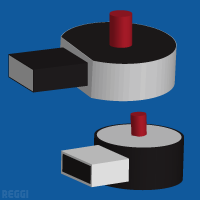

<?xml version="1.0" encoding="UTF-8"?>
<rss version="2.0"
	xmlns:content="http://purl.org/rss/1.0/modules/content/"
	xmlns:wfw="http://wellformedweb.org/CommentAPI/"
	xmlns:dc="http://purl.org/dc/elements/1.1/"
	xmlns:atom="http://www.w3.org/2005/Atom"
	xmlns:sy="http://purl.org/rss/1.0/modules/syndication/"
	xmlns:slash="http://purl.org/rss/1.0/modules/slash/"
	>

<channel>
	<title>Thomas Reggi &#187; blog</title>
	<atom:link href="http://reggi.com/blog/feed/" rel="self" type="application/rss+xml" />
	<link>http://reggi.com</link>
	<description>Just another WordPress site</description>
	<lastBuildDate>Thu, 16 Feb 2012 22:27:43 +0000</lastBuildDate>
	<language>en</language>
	<sy:updatePeriod>hourly</sy:updatePeriod>
	<sy:updateFrequency>1</sy:updateFrequency>
	<generator>http://wordpress.org/?v=3.2.1</generator>
		<item>
		<title>Diamond arrow (eliminating images on webpages)</title>
		<link>http://reggi.com/blog/2011/diamond-arrow-eliminating-images-on-webpages/</link>
		<comments>http://reggi.com/blog/2011/diamond-arrow-eliminating-images-on-webpages/#comments</comments>
		<pubDate>Tue, 08 Nov 2011 15:43:23 +0000</pubDate>
		<dc:creator>thomas</dc:creator>
				<category><![CDATA[code]]></category>
		<category><![CDATA[css]]></category>
		<category><![CDATA[hack]]></category>
		<category><![CDATA[imageless]]></category>

		<guid isPermaLink="false">http://reggi.com/?p=402</guid>
		<description><![CDATA[Below is code to my diamond hack this is for those little arrows that appear in list navigations and such. I hate creating these images, so here I am using pure css along with the diamond HTML entity to create the arrow. I did a quick google search for this and nothing came up so [...]]]></description>
			<content:encoded><![CDATA[<p>Below is code to my diamond hack this is for those little arrows that appear in list navigations and such. I hate creating these images, so here I am using pure css along with the diamond HTML entity to create the arrow. I did a quick google search for this and nothing came up so I&#8217;m not too sure if this is in wide use today.</p>
<pre>    &lt;style&gt;</pre>
<pre>    .diamond{height:12px;font-size:24px;color:#000;overflow:hidden;font-style:sans-serif;}
    .diamond .entity.up{margin-top:0px}
    .diamond .entity.down{margin-top:-12px}
    &lt;/style&gt;

    &lt;div class="diamond"&gt;&lt;div class="entity down"&gt;&amp;diams;&lt;/div&gt;&lt;/div&gt;&lt;!--end .diamond--&gt;</pre>
]]></content:encoded>
			<wfw:commentRss>http://reggi.com/blog/2011/diamond-arrow-eliminating-images-on-webpages/feed/</wfw:commentRss>
		<slash:comments>0</slash:comments>
		</item>
		<item>
		<title>The Coast Guard &amp; The Statue of Liberty</title>
		<link>http://reggi.com/blog/2011/coast-guard-statue-of-liberty/</link>
		<comments>http://reggi.com/blog/2011/coast-guard-statue-of-liberty/#comments</comments>
		<pubDate>Thu, 20 Oct 2011 21:53:26 +0000</pubDate>
		<dc:creator>thomas</dc:creator>
				<category><![CDATA[Photo]]></category>
		<category><![CDATA[America]]></category>
		<category><![CDATA[New York]]></category>

		<guid isPermaLink="false">http://reggi.com/?p=387</guid>
		<description><![CDATA[I was on the Staten Island Ferry today and took this photo at a really opportune moment. I&#8217;m not too sure what it means or says about America, or Terrorism, or whatever it&#8217;s free for your own interpretation.]]></description>
			<content:encoded><![CDATA[<p><a title="Coast Guard &amp; Statue of Liberty by ThomasReggi, on Flickr" href="http://www.flickr.com/photos/thomasreggi/6264922672/"></a></p>
<p>I was on the Staten Island Ferry today and took this photo at a really opportune moment. I&#8217;m not too sure what it means or says about America, or Terrorism, or whatever it&#8217;s free for your own interpretation.</p>
<p><iframe width="500" height="284" src="http://www.youtube.com/embed/O0cV4VHaEek" frameborder="0" allowfullscreen></iframe></p>
]]></content:encoded>
			<wfw:commentRss>http://reggi.com/blog/2011/coast-guard-statue-of-liberty/feed/</wfw:commentRss>
		<slash:comments>0</slash:comments>
		</item>
		<item>
		<title>Paranormal Activity 3 Screener</title>
		<link>http://reggi.com/blog/2011/paranormal-activity-3-screener/</link>
		<comments>http://reggi.com/blog/2011/paranormal-activity-3-screener/#comments</comments>
		<pubDate>Thu, 20 Oct 2011 17:56:22 +0000</pubDate>
		<dc:creator>thomas</dc:creator>
				<category><![CDATA[Movie Review]]></category>
		<category><![CDATA[Movie]]></category>
		<category><![CDATA[Paranormal Activity]]></category>
		<category><![CDATA[Review]]></category>
		<category><![CDATA[Screener]]></category>

		<guid isPermaLink="false">http://reggi.com/?p=394</guid>
		<description><![CDATA[Yesterday after much anticipation I had went to see Paranormal Activity 3 for free. I enjoyed the movie overall, but as I expressed at the end of the video review their was a ton of origin / backstory and no &#8220;frontstory&#8221;. Don&#8217;t get me wrong,  I liked the movie but there where some things missing, [...]]]></description>
			<content:encoded><![CDATA[<p><iframe src="http://www.youtube.com/embed/sLvw15Hupgk" frameborder="0" width="500" height="369"></iframe></p>
<p>Yesterday after much anticipation I had went to see Paranormal Activity 3 for free. I enjoyed the movie overall, but as I expressed at the end of the video review their was a ton of origin / backstory and no &#8220;frontstory&#8221;. Don&#8217;t get me wrong,  I liked the movie but there where some things missing, things that we all know will be on the Trilogy Collectors Edition. It&#8217;s hard to express my complaints without going into spoiler mode so don&#8217;t continue reading if you don&#8217;t want to know what happens or what doesn&#8217;t.</p>
<p>You are now entering SPOILERVILLE:</p>
<p>Little to none of the scenes that are in the trailer are in the film.  Namely, The mirror scene, The scene where the little girl jumps off of the balcony, The part when the little girl throws water at the ghost, the part with the seance guy, and most notably the part when their house is supposed to go on fire. I don&#8217;t understand why they left these out.</p>
<p>It also bothers me that there was no information on: Who took the tapes? Why are we watching the tapes? Where is Kate and Hunter now?</p>
<p>The movie really does not live up to it&#8217;s title as a &#8220;Third&#8221; in a trilogy. This should have been a straight to DVD film and perhaps deemed the number 2.5 definitely not 3.</p>
]]></content:encoded>
			<wfw:commentRss>http://reggi.com/blog/2011/paranormal-activity-3-screener/feed/</wfw:commentRss>
		<slash:comments>0</slash:comments>
		</item>
		<item>
		<title>Burying the lead</title>
		<link>http://reggi.com/blog/2011/burying-the-lead/</link>
		<comments>http://reggi.com/blog/2011/burying-the-lead/#comments</comments>
		<pubDate>Tue, 11 Oct 2011 06:04:47 +0000</pubDate>
		<dc:creator>thomas</dc:creator>
				<category><![CDATA[Electronics]]></category>
		<category><![CDATA[Video]]></category>
		<category><![CDATA[Soldering]]></category>

		<guid isPermaLink="false">http://reggi.com/?p=377</guid>
		<description><![CDATA[Today I took a huge step and did something that was at the top of my list of things I wanted to learn. I soldered. It was a fantastic experience. I purchased some cheep and awesome tools from ebay and radio shack and a heart shaped soldering kit called the flashing led sweetheart. I have yet [...]]]></description>
			<content:encoded><![CDATA[<p><iframe src="http://www.youtube.com/embed/El2rN0q07F0" frameborder="0" width="500" height="369"></iframe></p>
<p>Today I took a huge step and did something that was at the top of my list of things I wanted to learn. I soldered. It was a fantastic experience. I purchased some cheep and awesome tools from ebay and radio shack and a heart shaped soldering kit called the <a href="http://www.radioshack.com/product/index.jsp?productId=11024700">flashing led sweetheart</a>. I have yet to find a 9 volt battery to try it out and see if it works, so keep posted for the update.</p>
<p> I mention in the video the idea of a black box. Everyone has black boxes in something, for me I have a weak knowledge of how cars actually work and what is under the hood is a potent ial black box for many. For me my biggest bother is not knowing how electronics actually work, I build desktop computers and know how the macro parts fit together like the motherboard, processor, hard drive, etc, but how do those things work on a micro level? This has been bothering me, even a small breath of knowledge would curb my anxiety on the subject. So, I set out in the physical world to get some answers, sure I could have sat on my computer for hours looking through wikipedia about how leds work but that is no fun.</p>
<p>My philosophy on many things in life is that you need a &#8220;practical&#8221; reason to do something to actually get you to do it. Why would one learn how to program if they don&#8217;t have the desire to create programs? Why would one learn how to solder if they don&#8217;t have the desire to create electronic devices? There where times where I was forcing myself to learn programming and had no clue why I was learning what I was learning, it had no practical aspect, sure I wanted to create programs but I had no clue what I was learning would get me to the result I envisioned. I good example is learning about PHP variable types and arrays not seeing how this could help you create a blog. Sometimes the pieces seam fragmented and no light at the end of the tunnel seams fathomable. Ultimately if you stick with something long enough you can become novice at it and rule your dominion. You have the ability to understanding exactly how every piece fits and where the next piece is, this to me is pure bliss, and entirely worth the trial.</p>
<p>UPDATE: It works!</p>
]]></content:encoded>
			<wfw:commentRss>http://reggi.com/blog/2011/burying-the-lead/feed/</wfw:commentRss>
		<slash:comments>0</slash:comments>
		</item>
		<item>
		<title>Klout perk: Axe Hold+Touch</title>
		<link>http://reggi.com/blog/2011/klout-perk-axe-holdtouch/</link>
		<comments>http://reggi.com/blog/2011/klout-perk-axe-holdtouch/#comments</comments>
		<pubDate>Sun, 09 Oct 2011 00:31:16 +0000</pubDate>
		<dc:creator>thomas</dc:creator>
				<category><![CDATA[Companies]]></category>
		<category><![CDATA[axe]]></category>
		<category><![CDATA[klout]]></category>

		<guid isPermaLink="false">http://reggi.com/?p=372</guid>
		<description><![CDATA[Klout is a service that measures your social media presence and boils it all down to one number. This number provides a quantifiable amount of influence that one hold in the social media realm. Perks are available to people who have a designated klout score. Today I received a klout perk in the mail. Thought I [...]]]></description>
			<content:encoded><![CDATA[<p><iframe src="http://www.youtube.com/embed/7IA9LO0crYo" frameborder="0" width="500" height="284"></iframe></p>
<p>Klout is a service that measures your social media presence and boils it all down to one number. This number provides a quantifiable amount of influence that one hold in the social media realm. Perks are available to people who have a designated klout score.</p>
<p>Today I received a klout perk in the mail. Thought I would do an &#8220;unboxing&#8221; video and put it up online. It so happens that the youtubes did not agree with that and somehow the audio / video was not synchronized correctly. I re-recorded the video and here it is.</p>
<p>My klout perk was for Axe Hold+Touch Spiking Glue, which in my opinion smells pretty good for a hair product. I am really satisfied with the product as well as the post card that I received from klout.</p>
]]></content:encoded>
			<wfw:commentRss>http://reggi.com/blog/2011/klout-perk-axe-holdtouch/feed/</wfw:commentRss>
		<slash:comments>0</slash:comments>
		</item>
		<item>
		<title>Amazon Kindle Lineup</title>
		<link>http://reggi.com/blog/2011/amazon-kindle-lineup/</link>
		<comments>http://reggi.com/blog/2011/amazon-kindle-lineup/#comments</comments>
		<pubDate>Fri, 30 Sep 2011 02:00:32 +0000</pubDate>
		<dc:creator>thomas</dc:creator>
				<category><![CDATA[Companies]]></category>
		<category><![CDATA[Electronics]]></category>
		<category><![CDATA[Video]]></category>
		<category><![CDATA[Amazon]]></category>
		<category><![CDATA[Kindle]]></category>

		<guid isPermaLink="false">http://reggi.com/?p=325</guid>
		<description><![CDATA[Yesterday was the release of the new Kindle Fire by Amazon. Which, by the way is a very stupid name for their tablet, the word kindle already means fire, they couldn&#8217;t have thought of anything better? I digress. The main thing about Amazons new release that bothers me is that they now have a total [...]]]></description>
			<content:encoded><![CDATA[<p><iframe src="http://www.youtube.com/embed/WkKvKN3DuFE" frameborder="0" width="500" height="284"></iframe></p>
<p>Yesterday was the release of the new Kindle Fire by Amazon. Which, by the way is a very stupid name for their tablet, the word kindle already means fire, they couldn&#8217;t have thought of anything better? I digress. The main thing about Amazons new release that bothers me is that they now have a total of 6 devices under the Kindle name, which, in my opinion presents way too many options for the consumer.</p>
<p>Something else that bothers me is the idea of a company selling multiple products that do the same thing, and the cheeper models that do the &#8220;thing&#8221; worse. I am mainly referring to physical buttons v.s. touch screen. Amazon is selling two devices that do the same thing but have different methods of interface, which bothers me. It is known that one is more superior, and if one isn&#8217;t then which one should I buy? I am a very indecisive person, and I don&#8217;t want to regret buying a touch because the keyboard is crappy, and likewise I don&#8217;t want to buy the Kindle Keyboard and be stuck with a directional pad.</p>
<p>I understand having options thats why I am for having a Kindle with all of the amenities, a keyboard, touch screen, and perhaps even directional pad. My main point is that people like simplicity, they don&#8217;t want to have too many choices, I know I sure don&#8217;t.</p>
]]></content:encoded>
			<wfw:commentRss>http://reggi.com/blog/2011/amazon-kindle-lineup/feed/</wfw:commentRss>
		<slash:comments>0</slash:comments>
		</item>
		<item>
		<title>Frustrating Captcha</title>
		<link>http://reggi.com/blog/2011/frustrating-captcha/</link>
		<comments>http://reggi.com/blog/2011/frustrating-captcha/#comments</comments>
		<pubDate>Fri, 30 Sep 2011 00:00:23 +0000</pubDate>
		<dc:creator>thomas</dc:creator>
				<category><![CDATA[Companies]]></category>
		<category><![CDATA[Video]]></category>
		<category><![CDATA[Web]]></category>
		<category><![CDATA[Form Validation]]></category>

		<guid isPermaLink="false">http://reggi.com/?p=335</guid>
		<description><![CDATA[I got an email today from Blockbuster Express offering me to signup to e-Rewards.com, the incentive was that I would receive a free rental from a Blockbuster Express kiosk. When I clicked the link in the email I was sent to a form on e-Rewards.com. I filled out the form very carefully and pressed submit, and a [...]]]></description>
			<content:encoded><![CDATA[<p><iframe src="http://www.youtube.com/embed/sasdhuoPLgM" frameborder="0" width="500" height="284"></iframe></p>
<p>I got an email today from Blockbuster Express offering me to signup to e-Rewards.com, the incentive was that I would receive a free rental from a Blockbuster Express kiosk. When I clicked the link in the email I was sent to a form on e-Rewards.com. I filled out the form very carefully and pressed submit, and a validation error was caught, stating that the security code (a captcha image) was wrong. After about fifteen tries I gave up.</p>
<p>Security images are frustrating enough even when they work correctly, this one was definitely broken and I could not get through and submit my information. The Irony of all of this is that on the e-Rewards website the header states &#8220;We Value Your Time&#8221;, I spent ten minutes on their site and I couldn&#8217;t use their form.</p>
]]></content:encoded>
			<wfw:commentRss>http://reggi.com/blog/2011/frustrating-captcha/feed/</wfw:commentRss>
		<slash:comments>0</slash:comments>
		</item>
		<item>
		<title>A day in the life: January 13, 2011</title>
		<link>http://reggi.com/blog/2011/january-13-2011/</link>
		<comments>http://reggi.com/blog/2011/january-13-2011/#comments</comments>
		<pubDate>Thu, 13 Jan 2011 16:00:00 +0000</pubDate>
		<dc:creator>thomas</dc:creator>
				<category><![CDATA[A day in the life]]></category>

		<guid isPermaLink="false">http://blog.reggi.com/january-13-2011-4</guid>
		<description><![CDATA[A day in the life, is a series of blog posts in which I keep the posting window open all day, providing trivial updates to what I am doing. Unlike twitter I eventually formulate one-large conscientious thought, rather than series of meaningless &#8220;happenings&#8221;. Ultimately I provide a record of what I did the entire day. Right now [...]]]></description>
			<content:encoded><![CDATA[<p>A day in the life, is a series of blog posts in which I keep the posting window open all day, providing trivial updates to what I am doing. Unlike twitter I eventually formulate one-large conscientious thought, rather than series of meaningless &#8220;happenings&#8221;. Ultimately I provide a record of what I did the entire day.</p>
<p>Right now it is 8:00 am. Two alarms rang this morning, my computer woke up from sleep and I started today off with a shower like I normally do. As I am trying to find clothes to wear I am folding my laundry while watching the latest episode of <a href="http://revision3.com/trs/thursday-january13th-thegreenhornet">The Totally Rad Show</a>, they gave The Green Hornet movie a &#8220;meh&#8221; rating. In an effort to clear my google reader this <a href="http://decollage.pl/2011/01/13/zamieszkac-w-bibiotece/">blog post</a> from one of my favorite design blogs catches my eye. It&#8217;s of this totally gnarly ultra modern house in Brazil, would love to live in this type of environment. Whip open gmail and I am about to clear out all of my sitting-read imbox e-mails, however being detoured by blogging. Inbox is clear, cup of warm tea in my hand I&#8217;m ready to dive into the web frontier&#8230;</p>
<p>Now the time is 9:22 am. I am starting in the most likely of places, with <a href="http://paulirish.com/">Paul Irish</a> as my guide I yesterday dove into <a href="http://html5boilerplate.com/">HTML5 Boilerplate</a> and can now make out what most of the code is (thanks to his <a href="http://net.tutsplus.com/tutorials/html-css-techniques/the-official-guide-to-html5-boilerplate/">video</a>). Now I am off for more supplementary information located <a href="http://na.isobar.com/standards/">here</a>, standards people, they&#8217;re important. Right off the bat something that peaked my interest is the idea of &#8220;compress(ing) and gzip(ing) all static client-side files&#8221; automatically sounds really freaking sweet. The <a href="http://validator.w3.org/">W3C validator</a> is a valuable tool in debugging plane ol&#8217; HTML, because even if you write crappy HTML it will still run due to no <a href="http://www.w3.org/html/wg/wiki/DraconianErrorHandling">draconian error handling</a>. I like the idea of static content domains, or CDN, or cookieless domain, and would like to implement one (if applicable) on reggi-three-point-zero. I discovered that new twitter has no, no-JavaScript fallback (<a href="http://twitter.com/ThomasReggi/status/25577034335911936">original tweet</a>) what&#8217;s up with that?</p>
<p>Now the time is 11:11am. I decided to take a break from all of the lcd-screen-reading and after a quick rock out session in the Guitar Hero Room™. I am ready to turn on <a href="http://www.thesixtyone.com/">thesixtyone</a> and read up some more on microformats or fix my <a href="http://resume.reggi.com/">resumé</a> and get some semantics in the hizzy. Just discovered the chrome developer tools, *drops jaw*, it&#8217;s like firebug on roids. Nice job posterous for using actual html5 tags on the theme I am currently using. I&#8217;m curious to see how different posterous theming is from tumblr themeing. The <a href="http://posterous.com/theming/reference">code</a> is nearly <a href="http://www.tumblr.com/docs/en/custom_themes">identical</a>. Spent a good hour or two attempting to parse the HTML dom for tumblr / posterous variables with jQuery, epic failure I think cufon in the theme was overwriting shizz, anyway a quick google search for &#8220;local tumblr theme development&#8221; led me to <a href="https://github.com/mwunsch/thimble">this</a> github repo, mindblowing. I want something like this for both wordpress and posterous.</p>
<p>Now the time is 2:09pm. I feel like diving into rails 3, *rubs hands together*, wish me luck! I learned so much rails stuff, and object oriented programming is really starting to make sense. I wen&#8217;t to bed around ~ 11:00pm.</p>
]]></content:encoded>
			<wfw:commentRss>http://reggi.com/blog/2011/january-13-2011/feed/</wfw:commentRss>
		<slash:comments>0</slash:comments>
		</item>
		<item>
		<title>USB Pointing Stick</title>
		<link>http://reggi.com/blog/2010/bring-back-the-ibm-pointing-stick/</link>
		<comments>http://reggi.com/blog/2010/bring-back-the-ibm-pointing-stick/#comments</comments>
		<pubDate>Fri, 20 Aug 2010 11:33:00 +0000</pubDate>
		<dc:creator>thomas</dc:creator>
				<category><![CDATA[Electronics]]></category>
		<category><![CDATA[USB]]></category>

		<guid isPermaLink="false">http://blog.reggi.com/bringing-the-ibm-pointing-stick</guid>
		<description><![CDATA[I am fascinated by the IBM pointing stick. If your not familiar with it, it is a method of navigating your cursor without a mouse or trackpad. I had found an old IBM thinkpad 600 and while constantly finding myself frustrated with its out of date BIOS and utter rejection for the Ubuntu operating system [...]]]></description>
			<content:encoded><![CDATA[<p><a href="../2010/bring-back-the-ibm-pointing-stick/nub/index.html" rel="attachment wp-att-281"></a>I am fascinated by the IBM <a href="http://en.wikipedia.org/wiki/Pointing_stick">pointing stick</a>. If your not familiar with it, it is a method of navigating your cursor without a mouse or trackpad. I had found an old IBM thinkpad 600 and while constantly finding myself frustrated with its out of date BIOS and utter rejection for the Ubuntu operating system all the while I was using something seemingly unfamiliar, a pointing stick. I&#8217;m not a laptop guy, I&#8217;ve never actually done anything for more than an hour on a laptop, but when I use one I am often frustrated without a mouse.</p>
<p>The pointing stick opened the whole world up, it was the alternative to the crappy trackpad. Laptops, by nature are mobile and not having a mouse is practical but you take such a productivity hit for having to use a trackpad. I suggest creating a usb pointing stick dongle, this could go on the side of a laptop and be used as an alternative to a trackpad. My real dream is to see this on the side of my <a href="http://www.google.com/search?hl=en&q=apple+aluminum+wired+keyboard&gs_sm=e&gs_upl=2765l2765l0l4155l1l1l0l0l0l0l271l271l2-1l1l0&bav=on.2,or.r_gc.r_pw.r_cp.&biw=1550&bih=859&um=1&ie=UTF-8&tbm=isch&source=og&sa=N&tab=wi">Apple Aluminum keyboard</a>, as there is a usb port right under the escape key, you could use your right hand and easily move the cursor without really leaving the keyboard. I mean we can create <a href="http://www.google.com/search?q=USB+humping+dogs&um=1&ie=UTF-8&tbm=isch&source=og&sa=N&hl=en&tab=wi&biw=1550&bih=859">USB humping dogs</a> why can&#8217;t we make this happen?</p>
]]></content:encoded>
			<wfw:commentRss>http://reggi.com/blog/2010/bring-back-the-ibm-pointing-stick/feed/</wfw:commentRss>
		<slash:comments>0</slash:comments>
		</item>
		<item>
		<title>Commissioned Memes</title>
		<link>http://reggi.com/blog/2010/commissioned-memes/</link>
		<comments>http://reggi.com/blog/2010/commissioned-memes/#comments</comments>
		<pubDate>Tue, 27 Jul 2010 23:34:00 +0000</pubDate>
		<dc:creator>thomas</dc:creator>
				<category><![CDATA[Web]]></category>
		<category><![CDATA[Memes]]></category>

		<guid isPermaLink="false">http://blog.reggi.com/commissioned-memes</guid>
		<description><![CDATA[One day last week I spent a good hour watching Old Spice&#8217;s youtube response videos. I was referred to the videos by first hearing about them, on a popular internet podcast called Diggnation. I just finished reading &#8220;Reality: Old Spice sales are actually up 107% in the last month&#8221; which at the moment is top [...]]]></description>
			<content:encoded><![CDATA[<p>One day last week I spent a good hour watching Old Spice&#8217;s youtube response videos. I was referred to the videos by first hearing about them, on a popular internet podcast called Diggnation. I just finished reading &#8220;<a href="http://adweek.blogs.com/adfreak/2010/07/hey-old-spice-haters-sales-are-up-107.html">Reality: Old Spice sales are actually up 107% in the last month</a>&#8221; which at the moment is top on <a href="http://news.ycombinator.com/">Hacker News</a>.</p>
<p>As a tech savvy person, always looking for the &#8220;why&#8221; and the &#8220;how&#8221;. It was pretty astonishing seeing how many responses and the creativity that was involved in each response. While watching I had a revelation, these days marketing and especially commercials are not how they used to be. Most marketing tactics these days revolve around the same type of humor and irony that originated on the Internet.</p>
<p>Two other successful campaigns that use this tactic other than Old Spice, is <a href="http://www.youtube.com/watch?v=ojgi16des-U">Stride Gum</a> and <a href="http://www.youtube.com/watch?v=yYEhzCGHU_U">Dos Equis</a> (probably the best commercial ever). This humor can&#8217;t be faked, believe it or not it needs to be really well thought out. What I&#8217;m suggesting is a new field of study and career choice. In the future all businesses and brands will need to not only sell a product but craft a carefully illustrated campaign designed to resonate with today&#8217;s internet culture. I call these select individuals &#8220;contemporary internet humor specialists&#8221;.</p>
]]></content:encoded>
			<wfw:commentRss>http://reggi.com/blog/2010/commissioned-memes/feed/</wfw:commentRss>
		<slash:comments>0</slash:comments>
		</item>
	</channel>
</rss>

<!-- Localized -->